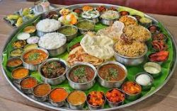

South Indian cuisine includes the cuisines of the five southern states of India—Andhra Pradesh, Karnataka, Kerala, Tamil Nadu and Telangana—and the union territories of Lakshadweep, Pondicherry, and the Andaman and Nicobar Islands. There are typically vegetarian and non-vegetarian dishes for all five states. Additionally, all regions have typical main dishes, snacks, light meals, desserts, and drinks that are well known in their respective region.
Coconut is native to Southern India and spread to Europe, Arabia, and Persia through the southwestern Malabar Coast of South India over the centuries. Coconut of Indian origin was brought to the Americas by Portuguese merchants. Black pepper is also native to the Malabar Coast of India, and the Malabar pepper is extensively cultivated there. During classical era, Phoenicians, Greeks, Egyptians, Romans, and Chinese were attracted by the spices including Cinnamon and Black pepper from the ancient port of Muziris in the southwestern coast of India.During Middle Ages prior to the Age of Discovery which began with the end of the 15th century CE, the kingdom of Calicut (Kozhikode) on Malabar Coast was the centre of Indian pepper exports to the Red Sea and Europe at this time with Egyptian and Arab traders being particularly active. The similarities among the five southern states' cuisines include the presence of rice as a staple food, the use of lentils and spices, dried red chilies and fresh green chillies, coconut, and native fruits and vegetables including tamarind, plantain, jackfruit, snake gourd, garlic, and ginger.